For Phil & Maryia
How to edit the website
Add projects, swap photos and change the wording yourselves. A change shows up on the site about a minute after you save it.
Everything is done on one page, called the editor. Bookmark it:
architeuthis-flux.github.io/crabbe-construction/admin/
Open the editorIt works in the browser on a computer or a phone. There is nothing to install.
Rather just say what you want? Ask Claude can make many of these changes for you.
- One-time setup
- Signing in
- Finding your way around
- Add a new project
- Change the photos on a project
- Change the words on the home page
- Add a new page
- Delete something
- Or ask Claude to do it
- If something goes wrong
Do this onceOne-time setup
Each of you needs your own free GitHub account. It takes about five minutes.
- Go to github.com/signup and create an account with your own email address. Choose a password only you know.
- Send Kevin the username you picked.
- Kevin adds you to the website. GitHub then emails you an invitation: open it and click Accept invitation.
- Bookmark the editor address at the top of this page.
Why do I need a GitHub account?
The website is really a folder of files: your words, your photos, and a recipe that turns them into pages. That folder is kept on GitHub, a service that stores files and remembers every change ever made to them.
Your GitHub account is your key to that folder. The editor is the friendly front door, so you never have to look at GitHub itself after this setup.
Every now and thenSigning in
- Open the editor.
- Click Sign In with GitHub. Ignore the other button; that one is for Kevin.
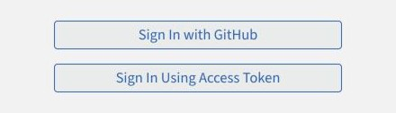
Use the top button. - The first time only, a small GitHub window asks you to Authorize Crabbe Construction Editor. Click the green Authorize button.
- The editor opens. You stay signed in on that computer or phone, so most days you skip straight to editing.
What is the sign-in actually doing?
The editor asks GitHub who you are. GitHub checks with a small sign-in helper that Kevin runs, then hands the editor a temporary pass. That pass only works on this website's folder, and it renews itself quietly in the background.
Your password never goes to the editor. If you have not used the editor for about six months, it will ask you to click the sign-in button again.
The lay of the landFinding your way around
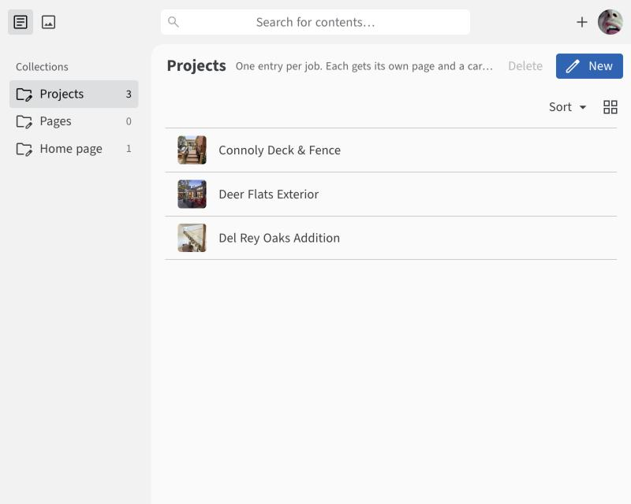
- Projects: one entry per job. Each gets its own page on the site and a card on the Works page.
- Pages: extra pages you might add later, such as "Our Process".
- Home page: the words and photos on the front page, plus the phone number shown everywhere.
- The New button, top right, adds an entry to whichever list you are in.
- The small picture icon at the top left opens the photo library: every photo on the site in one place.
On a phone the same things are arranged for a small screen. The list of Projects, Pages and Home page is its own screen: tap the arrow at the top left to get back to it. The round blue pencil button at the bottom right is New, and the picture icon in the bar at the bottom opens the photo library. Save stays at the top right.
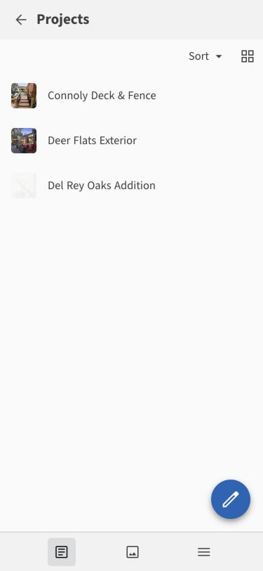
Where does this list come from?
Each project is one small text file in the website's folder, with its photos next to it. The editor reads those files and shows them as this list. When you fill in a form and save, the editor writes the file for you.
The one you will use mostAdd a new project
- Click Projects on the left, then New at the top right.
- Fill in the Project name, for example "Deer Flats Exterior".
- Choose the Type: Residential or Commercial.
- Write a One-line description. It shows on the project's card and under its title.
- Add the Main photo: click Browse and pick it, or drag it onto the grey box. On a phone, Browse opens your photos.
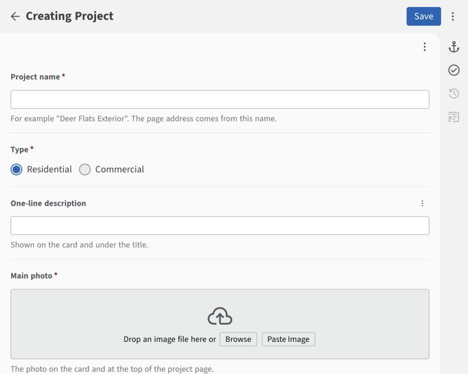
The top of the new project form. A red star marks a box you have to fill in. - Add More photos the same way, as many as you like. Each one you add appears in a list.
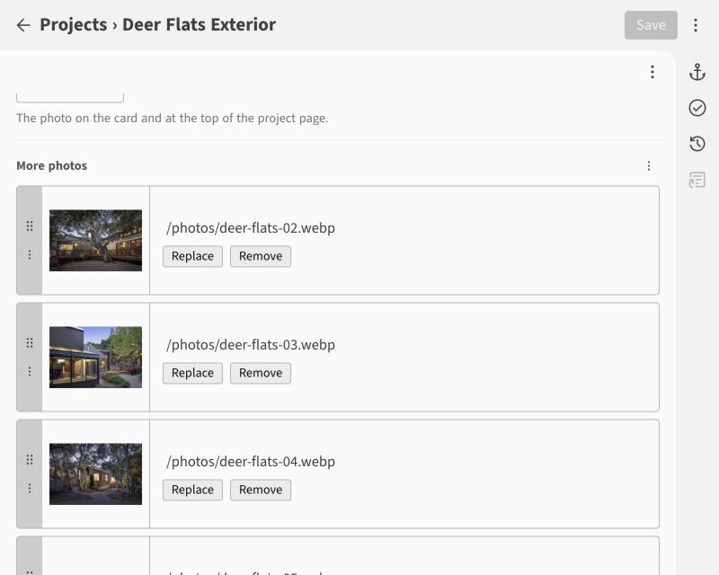
Drag a row by the six dots on its left edge to change the order. The gallery on the site follows this order. - Write The story if you want to: a few sentences about the job. This box is optional.
- Leave Show on the home page switched on if the project should also appear under Recent Works on the front page.
- Leave Position at 0 to put the new project first in the list.
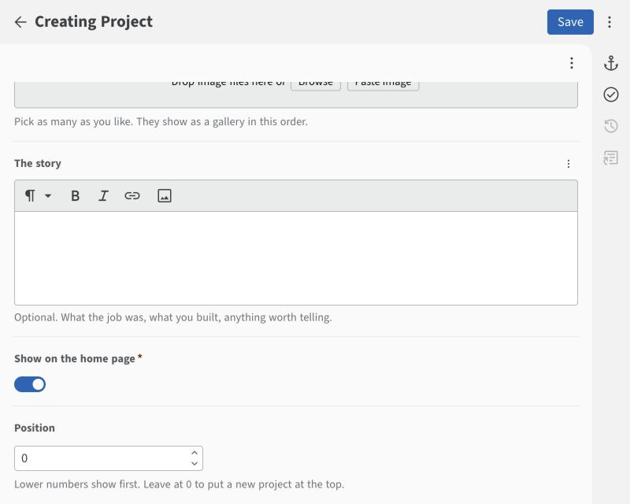
The bottom of the form. - Click Save at the top right and wait for the green "Entry saved." message.
- Give it a minute, then open the site and look.
What happens when I click Save?
- The editor shrinks your photos. A phone photo is several megabytes; the site only needs a fraction of that, so pages stay fast. In our test a 1.5 MB photo became about 0.4 MB.
- It puts the project's text file and photos into the website's folder on GitHub. GitHub records this as one entry in its history, with your name on it.
- GitHub notices the change and rebuilds the website's pages from the files. That usually takes under a minute.
- The new pages replace the old ones, and the change is live.
That rebuild is the reason for the short wait between saving and seeing it.
What does Position do?
The site lists projects by this number, smallest first. New projects start at 0, so they land at the top. The three projects already on the site are numbered 1, 2 and 3. Change a number and save to move a project up or down.
Where does the page's address come from?
From the name you give it when you first save. "Deer Flats Exterior" becomes deer-flats-exterior in the address. Renaming a project later changes the title on the page but keeps the old address, so links people already have keep working.
Swap, add, reorderChange the photos on a project
- Click Projects, then click the project.
- To swap the main photo, click Replace next to it.
- Under More photos, use Replace or Remove on any row, drag rows to reorder them, and add new ones in the grey box at the bottom of the list.
- Click Save.
Removing a photo from a project takes it off that page. The photo file itself stays in the photo library, in case you want it again.
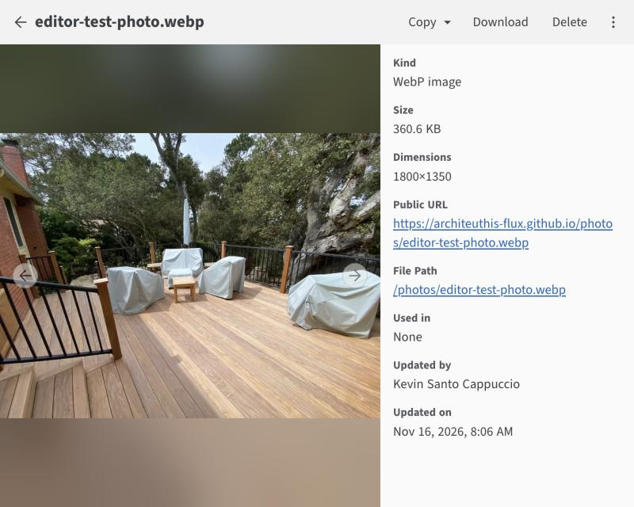
Why are there two places for photos?
The photo library is the shelf where every photo file sits. A project only keeps a list of which photos to show and in what order. That is why one photo can appear on two pages, and why taking a photo off a project does not throw the file away.
Front page and phone numberChange the words on the home page
- Click Home page on the left, then Home page and contact details.
- Change what you need: company name, phone number, the big photo at the top, the introduction, services, the philosophy quote, and the About text, in roughly the order they appear on the page.
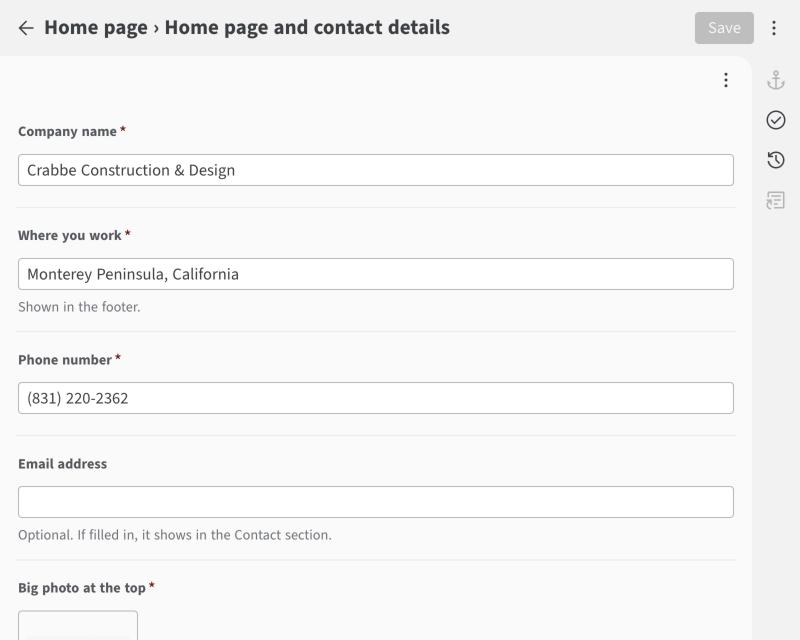
The top of the home page form. - To add a service, scroll to Services and click Add Service. To start a new paragraph in a description, leave a blank line.
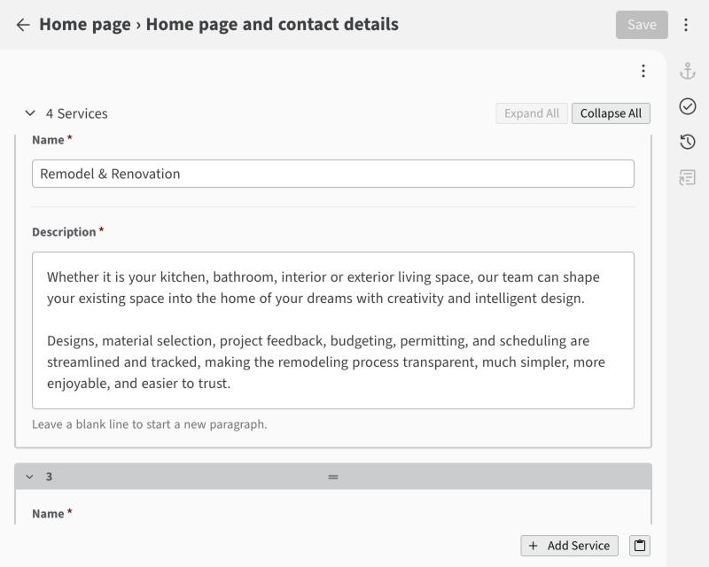
Each service has a name and a description. - Click Save.
The Email address box is empty for now. Fill it in and the address appears in the Contact section of every page.
Why does one form change every page?
The pages are not written by hand. They are built from these forms each time you save. So the phone number lives in exactly one place, and the header, the buttons and the Contact section on every page all pick it up from there.
For anything that is not a jobAdd a new page
- Click Pages on the left, then New.
- Type the Page title. It becomes the link in the menu and the page's address.
- Leave Show in the menu on to add the page to the menu at the top of the site. Switch it off for a page you only want to reach by its link.
- Write the Page text. The small buttons above the box make text bold or italic, add a link, or drop in a picture.
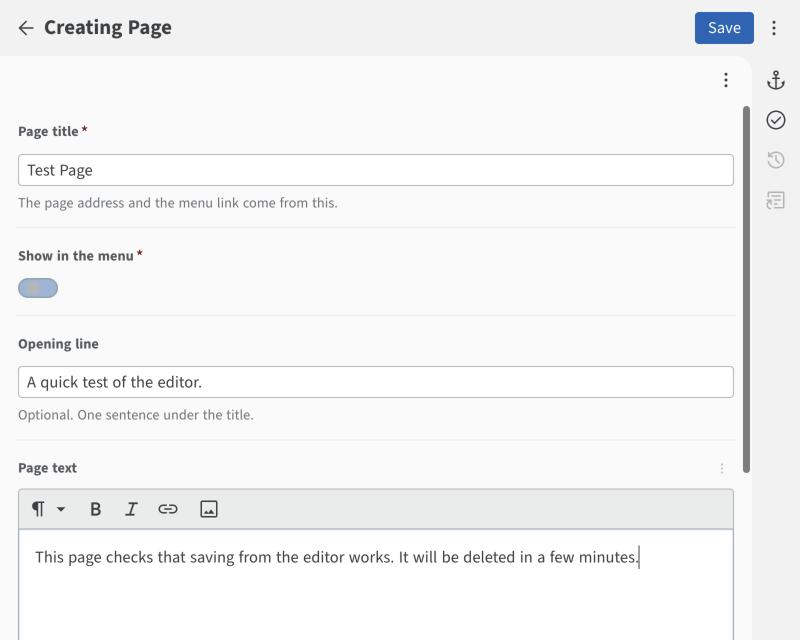
A page being written. This one has the menu switch turned off. - Add Photos if you want a gallery under the text.
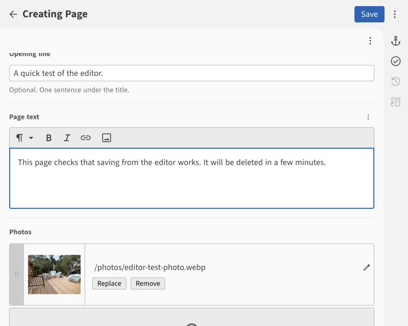
A photo after it has been added. - Click Save and wait for the green "Entry saved." message.
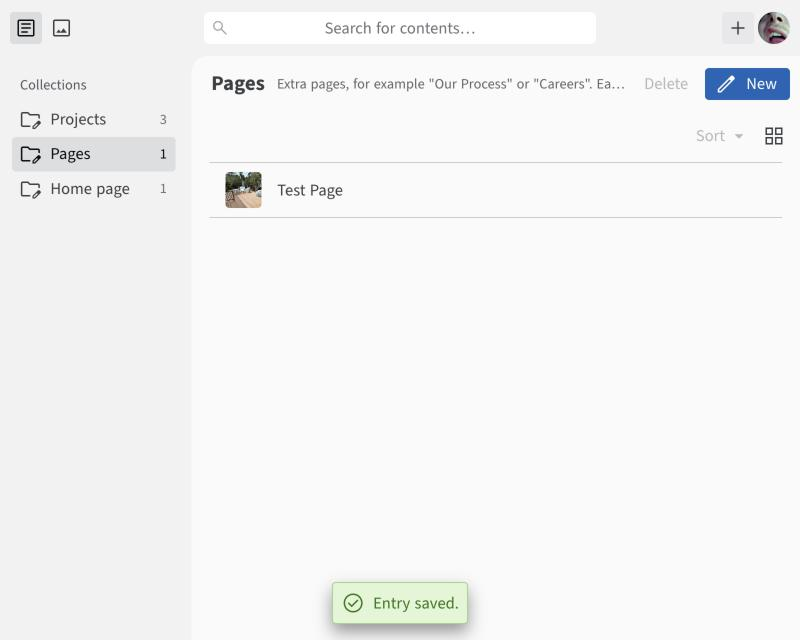
Saved. The new page is in the list.
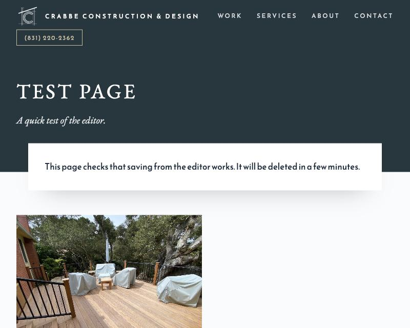
Projects, pages and photosDelete something
- Open the project or page.
- Click the three dots at the very top right, then Delete.
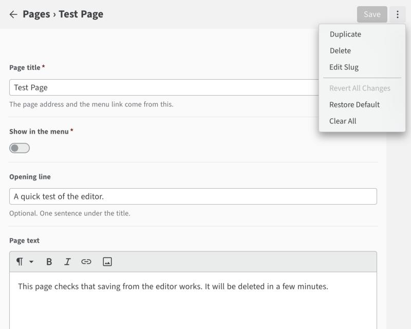
The menu behind the three dots. - Click Delete again to confirm.
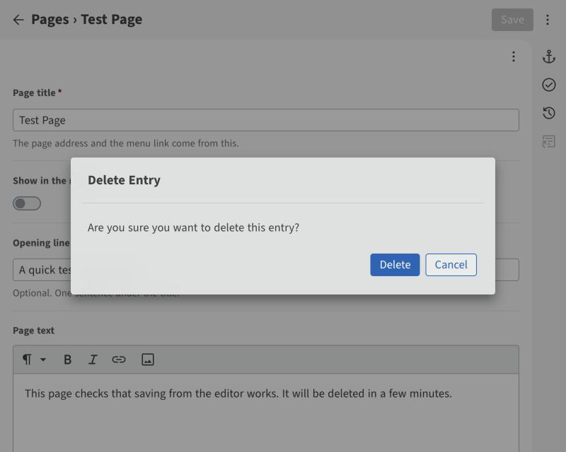
The editor always asks first.
Deleting a project leaves its photos in the photo library. To remove a photo for good, open it in the photo library and click Delete there.
Is it gone forever?
No. GitHub keeps the history of every change, including deletions, so anything removed by mistake can be brought back. Ask Kevin and say roughly when it was deleted.
The quick wayOr ask Claude to do it
Claude is an AI assistant. On the Ask Claude page you type what you want changed, in your own words, and it gets the change ready for you.
- Open Ask Claude and click Sign in with GitHub, the same account as the editor.
- Type what you want. For example: "Change the phone number to (831) 555-0100", "Shorten the description of the Deer Flats project", or "Add a page called Our Process that says…" and then the words.
- Claude looks at the site, gets the change ready and tells you what it will do.
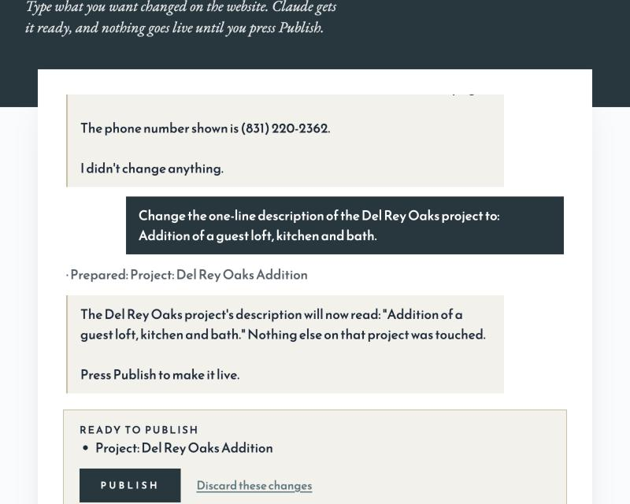
A request, Claude's answer, and the change waiting to be published. - If that is what you meant, press Publish. If it is not, press Discard these changes and say it again another way.
- Give it a minute, then open the site and look.
Claude can change wording, projects and pages, and pick from photos already on the site. It cannot add new photos, so put those in through the editor first. It cannot change how the site looks; that is still Kevin.
What is Claude actually doing?
It reads the same small files the editor works with, writes new versions of the ones that need changing, and holds them until you decide. Nothing changes on the site while it is working.
Publish saves those files the same way the editor's Save button does, with your name on the change. So the same one-minute wait applies, and the same history means a mistake can be undone.
Does it cost anything?
Each request costs a few cents, which Kevin covers. Use it whenever it saves you time on a real change.
Nothing here can break the site for goodIf something goes wrong
- I saved, but the site looks the same. Wait two minutes, then reload the page. On a phone, pull down to refresh.
- The Save button is grey. Either nothing has changed yet, or a box with a red star is still empty.
- I changed something and it looks wrong. Open it again, fix it and save. If you cannot get it back to how it was, ask Kevin: every save is recorded and can be undone.
- It is asking me to sign in again. Click Sign In with GitHub. Nothing is lost.
- A photo looks cut off on a card. Cards and gallery tiles trim photos to a common shape. Click the photo on the site to see all of it.
- Anything else. Text Kevin.